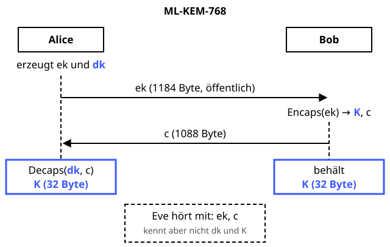

ML-KEM (Kyber)
Der quantensichere Nachfolger von Diffie-Hellman: Das Geheimnis reist im versiegelten Topf.
Definition
ML-KEM (Module-Lattice-Based Key-Encapsulation Mechanism) ist seit August 2024 der NIST-Standard FIPS 203 und basiert auf CRYSTALS-Kyber. Ein KEM verschlüsselt keine Nachrichten, sondern „verkapselt“ einen zufälligen gemeinsamen Schlüssel. Ein Quantencomputer könnte mit dem Shor-Algorithmus RSA und Diffie-Hellman brechen – ML-KEM beruht dagegen auf dem Gitterproblem Learning With Errors, für das kein solcher Angriff bekannt ist.
Zutaten
- Ein Parametersatz: ML-KEM-512, -768 oder -1024
- Ein öffentlicher Encapsulation Key ek
- Ein geheimer Decapsulation Key dk
- Hashfunktionen aus der SHA-3-Familie
- Eine gute Zufallsquelle
Zubereitung
- KeyGen: Alice wählt geheime kleine Polynome s und e und berechnet t = A · s + e. Ihr ek ist t zusammen mit dem Startwert für A, ihr dk enthält s.
- Alice schickt ek an Bob.
- Encaps: Bob würfelt 32 zufällige Bytes m und leitet daraus per Hash den gemeinsamen Schlüssel K und den Zufall für die Verschlüsselung ab.
- Bob verschlüsselt m mit ek wie im LWE-Rezept zum Chiffrat c und schickt c an Alice. K behält er.
- Decaps: Alice entschlüsselt c mit dk, erhält m und berechnet daraus dasselbe K.
- Zur Kontrolle verschlüsselt Alice m noch einmal selbst – das geht, weil auch Bobs Zufall aus m abgeleitet wurde. Weicht das Ergebnis von c ab, gibt sie einen nutzlosen Pseudo-Schlüssel aus – so lernt ein Angreifer nichts aus manipulierten Chiffraten.
- Beide nutzen K, z. B. als AES-GCM-Schlüssel.
Skizze

Anders als bei Diffie-Hellman erzeugt nur Bob das Geheimnis. Alice packt es mit ihrem dk wieder aus.
Skizze erstellt von Claude (KI)
Demo
Platzhalter für die Demo
Tipps
- „Harvest now, decrypt later“: Angreifer können verschlüsselten Verkehr schon heute speichern und später mit einem Quantencomputer entschlüsseln. Deshalb wird der Schlüsselaustausch als Erstes umgestellt.
- ML-KEM ist sehr schnell, aber größer: Bei ML-KEM-768 hat ek 1184 Byte und c 1088 Byte, bei X25519 sind es je 32 Byte.
- ML-KEM-768 ist die übliche Wahl. ML-KEM-1024 nimmt man, wenn es besonders lange geheim bleiben muss.
- Wie Diffie-Hellman authentisiert ML-KEM niemanden. Dafür braucht es Signaturen, z. B. ML-DSA.
- In der Praxis wird ML-KEM meist hybrid zusammen mit X25519 eingesetzt.
- Als Reserve hat das NIST 2025 zusätzlich HQC ausgewählt – ein KEM auf Basis fehlerkorrigierender Codes, falls bei Gittern doch Schwächen auftauchen.